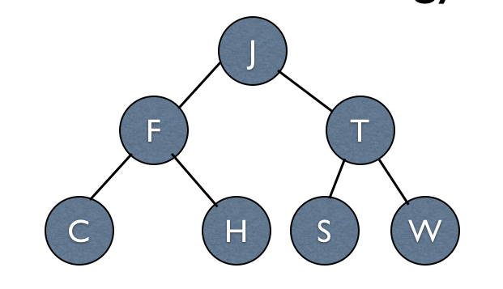
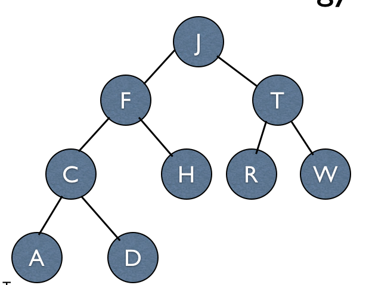
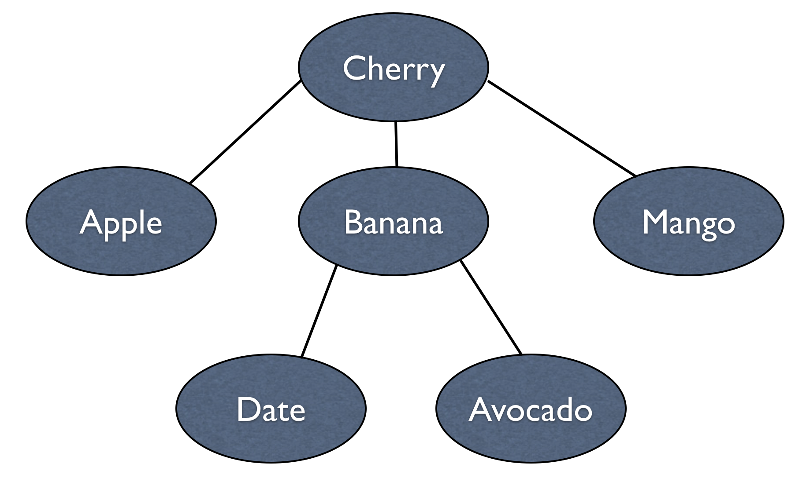
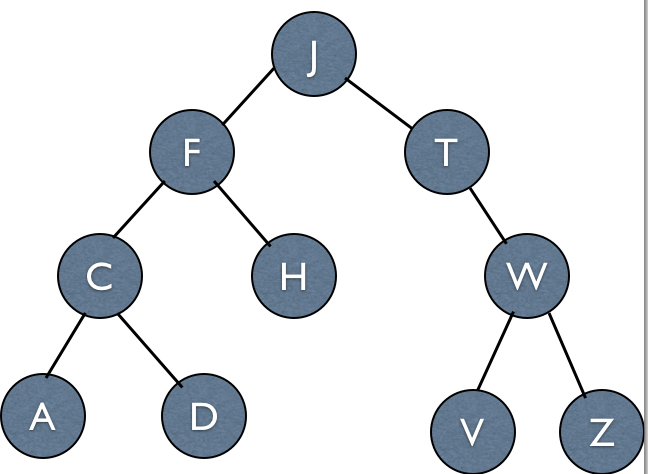
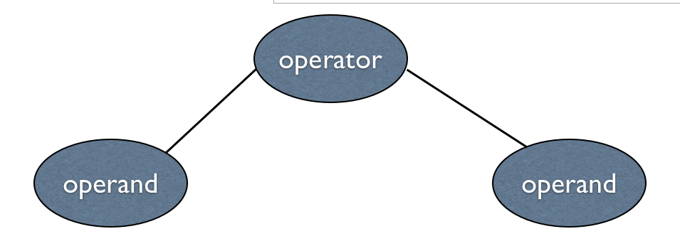
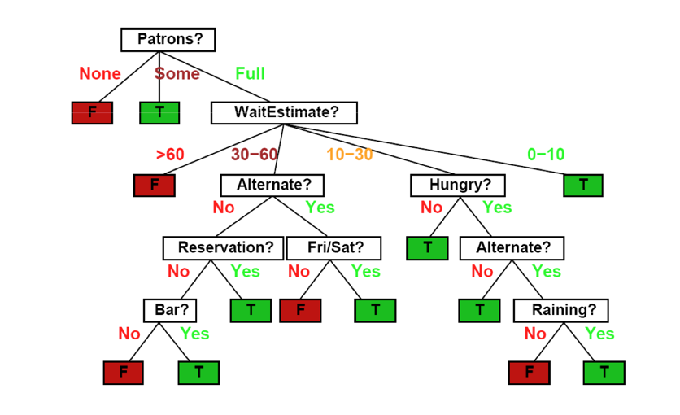
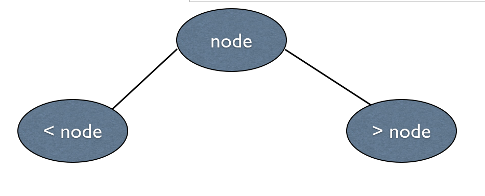
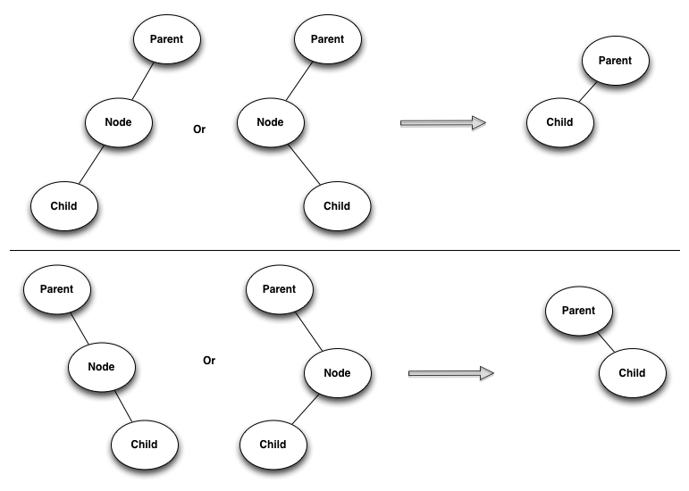
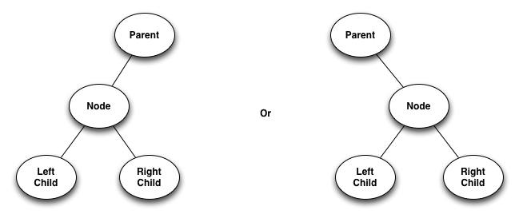

Trees
A fundamental data structure in computer science that illustrates a
hierarchical relationship between data.
Objectives
- Provide an overview of trees and their terminology
- Examine applications that use trees.
Overview
Some terminology
* Notice how counting begins at level zero!
Binary Tree
The tree shown above is a special type of tree known as a binary tree which means that a
node can have 0, 1, or 2
children.
A tree of height h that has all of its leaves at level h and every
non-leaf node has exactly two children is known as a full binary tree.

A complete binary tree has
all possible nodes filled in, yet the bottom level is filled in from
left to right

General Trees
A general tree has no
restriction on the number of children a node may have.

Traversals of a Binary Tree
Consider the following tree

A traversal involves visiting a node, and then
traversing the left and right subtrees. Traversals are distinguished
by the order of these operations.
Pre-Order Traversal
1. Visit the root
2. Traverse left subtree
3. Traverse right subtree
Note this is a recursive algorithm. If we consider visiting a node
simply outputting the value of the node, the pre-order traversal
outputs the following nodes
J, F, C, A, D, H, T, W, V, Z
In-Order Traversal
1. Traverse left subtree
2. Visit the root
3. Traverse right subtree
The output
A, C, D F, H, J, T, V, W, Z
Post-Order Traversal
1. Traverse left subtree
2. Traverse right subtree
3. Visit the root
The output
A, D, C, H, F, V, Z, W, T, J
Examples of Trees
We now look at some uses of trees
Expression Trees
We can use binary trees to illustrate expressions

Recall infix and
postfix expressions?
Decision Trees
Decision trees are widely used in artificial intelligence for
decision-making.
The following decision tree is used to answer whether a customer
will wait for a table at a busy restaurant.

Binary Search Trees
A binary search tree (BST) is a special type of tree with the
following requirement

The tree in the figure at the top of this document is a BST.
Performance of a binary search tree can range from O(lg n) to O(n).
Constructing Binary Search Trees
Inserting the following elements into a binary search tree
16, 19, 2, 4, 3, 1, 9, 12, 18, 27
Deleting from a Binary Search Tree
Three Cases:
#1 - Removing a Leaf Node
This is trivial.
#2 - Removing a Node with One Child

#3 - Removing a Node with Two
Children

In-Class Exercise
[ Only click on the following link once you have completed the in
class exercise. <
Solutions > ]